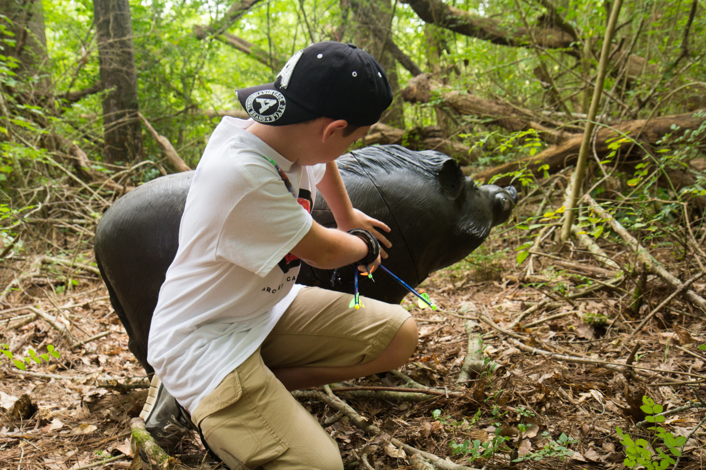
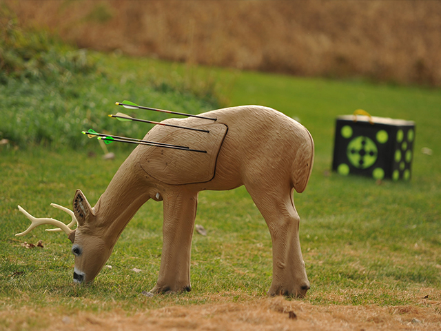

3D Archery
The typical archery range is flat, with targets set at exact distances. In contrast, 3-D Archery takes the archery range into the woods, introduces unique angles, and creates new ways to have fun with a bow.
This discipline gets its name from the three-dimensional animal targets that challenge archers at each station. The targets range from small skunks to massive elk, and are set along a course that resembles a hiking trail.
Each target helps create a different shooting scenario. You might shoot downhill at a deer target, and then walk a few steps to shoot at an alligator in a swamp. The shots try to mimic the countless scenarios bowhunters could face in the field.
This creates realistic bowhunting practice, but 3-D archery isn’t just for hunters. It’s exciting for any archer because no two shots are the same, and it’s meant to be played with a group of archers.
WHERE TO TRY 3-D ARCHERY

You can meet friends or bring your own to 3-D shoots. Archery clubs often open 3-D shoots to the public, which lets everyone enjoy a day of hiking and shooting in the woods. Likewise, archery shops are great resources for local knowledge, and their staffs can help you find a nearby 3-D shoot.
You can also join an archery club and practice shooting 3-D archery at your leisure. If you’re lucky enough to have a backyard range, you can set up your own 3-D range by buying several animal targets from an archery shop. Although a backyard 3-D range makes practice convenient, 3-D tournaments are even more fun and exciting.
HOW TO PLAY

When you arrive at a 3-D shoot, go to its registration area to pay your entry fee and sign some forms. If you’re alone, ask the organizer if a group of experienced archers can show you the ropes.
After registering, visit the practice range to warm up and verify your sights are set. Once you’re warmed up, hit the course with your group.
At the first target, you’ll notice stakes or small flags stuck in the ground. Stakes at each target designate the shooting position. Most 3-D courses have stakes at various distances to accommodate different equipment and age classes. If you’re a beginner, choose a stake set at a distance you feel comfortable shooting.
You’ll fire one arrow from the stake at each target. Once everyone in your group shoots their arrow, you’ll walk to the target, check your results and pull your arrows. The group then moves to the next target. This process continues throughout the course, which usually has 30 targets.
This dynamic sport creates excitement while building and honing archery skills. If you’re looking to mix things up with your practice or you’re searching for a fun new discipline, try 3-D archery.
#Article from Archery 360 Magazine
Read More
> Target Archery> Field Archery
> Traditional Archery
> Clout Archery
> Flight Archery